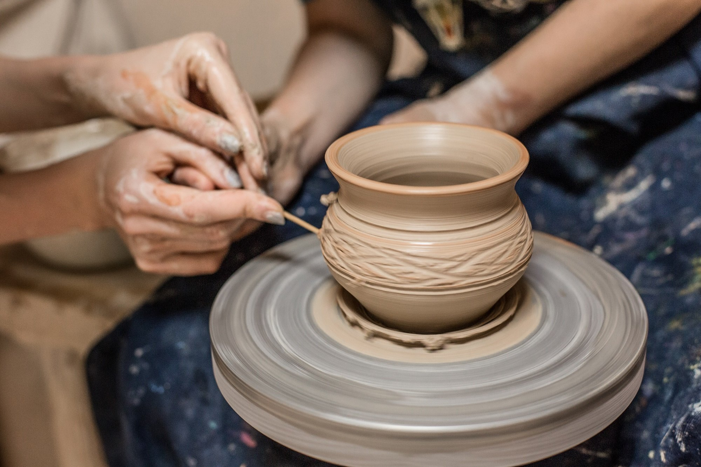
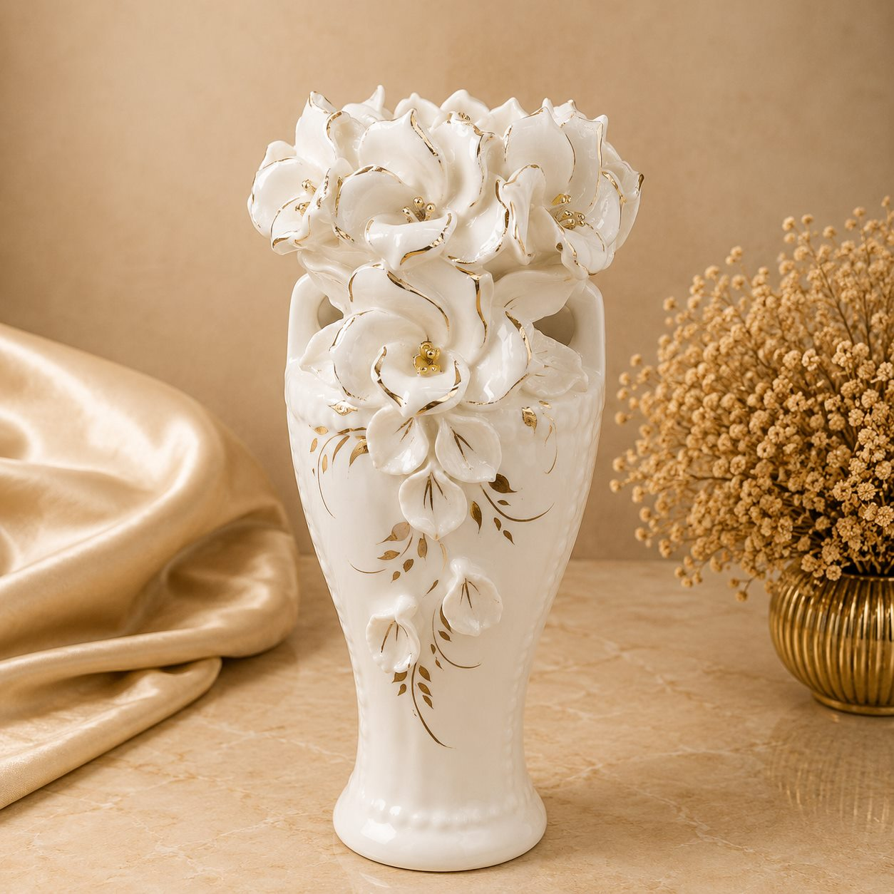

Виробництво керамічних виробів
Виробництво керамічних виробів — це одне з найдавніших ремесел людства, яке поєднує в собі мистецтво, традиції та сучасні технології. Основною сировиною для виготовлення слугує глина з різними мінеральними добавками.
Про гончарство та кераміку
Процес створення керамічного виробу складається з кількох послідовних етапів: формування, сушіння, первинного випалу, нанесення поливи (глазурі) та повторного випалу при високих температурах.
Основні види кераміки
Залежно від складу глини та температури випалу керамічні вироби поділяють на гончарну кераміку, теракоту, майоліку, фаянс та порцеляну .
Сучасна кераміка використовується не лише у побуті, а й у промисловості. Технічна кераміка володіє високою термостійкістю, міцністю та ізоляційними властивостями.
Переваги керамічних виробів
- Екологічність та безпечність для здоров'я
- Довговічність та стійкість до високих температур
- Естетична цінність та унікальність кожної речі
- Широкий спектр застосування — від посуду до промисловості
Етапи виготовлення виробу
- Підготовка та замішування глиняної маси
- Формування виробу на гончарному крузі або у формах
- Попереднє сушіння на повітрі
- Випал у спеціальній печі при температурі 900–1200°C


Каталог виробів
| Назва | Тип | Рік виготовлення | Ціна (грн) | Призначення | Є типовим | Дії |
|---|
Додати новий виріб
Корисні посилання
Часті запитання
Як доглядати за керамікою?
Більшість керамічного посуду можна мити в посудомийній машині, але речі з ручним розписом краще мити вручну.
Чим відрізняється фаянс від порцеляни?
Порцеляна випалюється при вищих температурах, вона біла, тонша і просвічується на світлі.